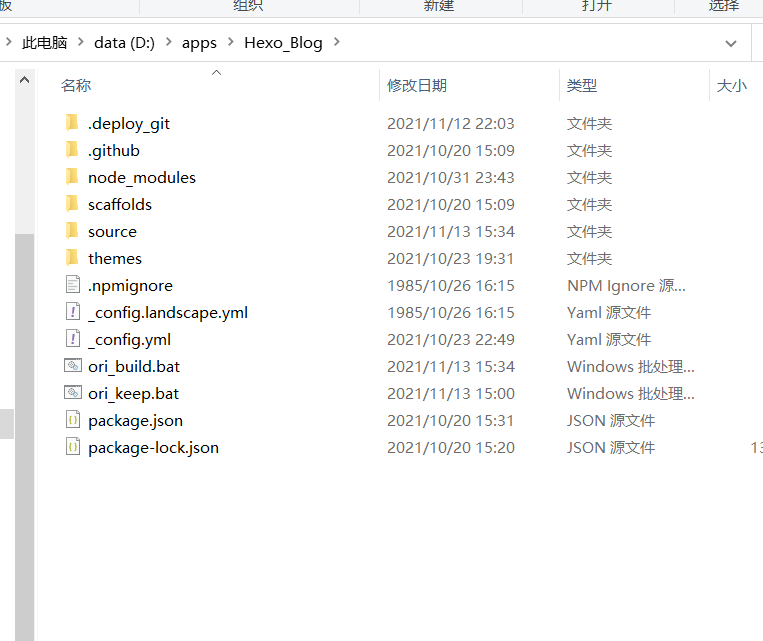

自动化hexo中.md和.yml配置文件的版本管理
此文章属于原创，如需使用请标明出处！
时间是在我刚好搭建完hexo，正在总结hexo博客管理的机制和方法。看了很多网上的帖子，发现了这么一篇 将原始的 .md 文件纳入 hexo 的版本管理 文章，我感觉蛮有意思的。正巧之前也看hexo的官方文档时有看到过 _config.yml 配置文件 各字段的意义，于是也在自己的hexo文件夹里新建并配置了这么一个能把 .md 和 .yml 纳入git版本管理的文件夹ori_data。
在一开始，我并没什么想法。不过，我后来发现，将这个过程自动化非常有必要。
要说明一下，最先我将自己的学习笔记放在csdn上，过了一年左右，我感觉这有一点不舒服，就是记笔记不方便，整理不方便，我的笔记在csdn的服务器上——感觉不舒服。真正笔记应该是在自己手上，一下子就打开，是有实体的，我可以决定要不要把它发布在网上，但不能只在网上。于是我就打算在本地写笔记的，只不过，又有要求要将blogs发布在网上，我就开始搭hexo。也就是说，我写博客，是在一个本地的文件夹里写和保存，我要发布的话再把它复制一份到hexo文件夹里。又因为图片加载的问题，本地Markdown文件夹和Hexo文件夹的md文件内容不同（没有使用图床，感觉没必要）。
总结一下就是：同一篇博客，一份在本地Markdown文件夹，一份在hexo文件夹，两者都有必要做备份，并且将给yml配置文件做备份也十分有必要。
又因为 hexo+github 的特殊性，将它们一起纳入git版本控制并发布在github上就很nice。不过这样，它又延伸了一个问题：每次手动做备份，相当复杂、麻烦。就这样，我起了写个bat来实现自动化的念头。
在接下来，我会一步步写下我自己设计bat的思路和过程。
源码
在这一部分将贴出源码。
我一共写了两个bat文件——ori_build,ori_keep，分别实现了创建ori_data目录，实现了备份md文件以及hexo和hexo下themes的配置文件。

- pause是一条命令，作用就是使程序暂停，这就是输出“请按任意键继续…”的原因
- @echo off执行以后，后面所有的命令均不显示，包括本条命令
- echo off执行以后，后面所有的命令均不显示，但本条命令是显示的
注意：由于在bat里用的都是相对路径，两个bat文件要放在hexo根目录下
ori_build
在ori_build中，主要使用md创建文件夹，来构建目录结构。
1 | @echo off |
ori_keep
在ori_keep中，使用copy和xcopy实现文件复制，两者间是有区别的，将在下面解释。
1 | @echo off |
设计
我会根据我一开始的设计思路进行解说，感兴趣的话可以看看。
文件目录结构：
1 | D:\apps\Hexo_Blog\source |
ori_keep
keep有维护的意思，即备份维护。
第一步
实现根目录下 _config.yml 的备份
很容易发现，源文件夹和目标文件夹有很明显的映射关系，只要遍历所有文件，将每一个目标文件复制到目的地就可以了。
第一条使用的是，copy。
1 | copy 源路径 目标路径 |
这里要提一点，就是copy文件过去，你绝对要面对一个问题，即文件覆盖（已经存在一个文件名一样的文件），你需要在文件复制前确认。由于我们是批文件处理，这种行为完全没必要，甚至破坏了bat文件的特性。
解决办法就是加上一个参数 /y ，意思就是 覆盖现有目标文件不需要确认，而参数 /v 的意思是 检查文件写入是否正确。
这样子，第一条复制根目录 _config.yml 的copy命令完成。
你或许发现了，在copy目标路径中，最后一部分是 config.yml
这就是copy命令的特别之处，在复制文件的同时，重命名文件
第二步
实现 md文件以及相应图片 的备份
在md和图片备份中，copy命令是不能复制文件夹的，因此要使用xcopy文件。
命令的结构是完全相同的，只不过参数有变化。/y同上；/e复制所有的目录和子目录（包括里面的文件）；/f显示完整的源和目标文件。
于是，实现了文章以及图片的备份，以及tags和categories模板的备份。
注意：通配符 * 表示多个字符。？ 表示一个字符。
第三步
实现不同主题的配置文件的备份
相对来说，这一部分是最复杂的一部分。
1 | for /d %%i in (*) do ( |
首先，我们需要了解for循环:
for [参数] %%变量名 in (匹配符) do (执行的命令)
无参：遍历当前路径下的文件，可在(匹配符)中指定路径/d：遍历当前路径下的文件夹，可在(匹配符)中指定路径/r [路径]：深度遍历指定路径下的所有文件，子目录中的文件也会被遍历到，如果没指定路径，默认当前路径/l：当使用参数 /l 时，需结合(匹配符)一起使用，此时 () 括号内部的用法规则为：(start, step, end)，此时的 for 命令作用等同于 java 语言中的 for 语句/f：用于解析文件中的内容
我的目的就是遍历themes的所有主题文件夹，并备份其配置文件。
变量名指向了每一个遍历的对象，在这里它指向了每一个主题文件。
第一步，进入themes文件夹，以便使用for进行遍历。
第二步，使用copy命令复制主题的配置文件。文件重命名部分是"%%i"_config.yml，使用双引号将变量包裹，表示一个字符串。..表示返回上一目录。
注意：由于重命名命令
ren没有覆盖文件的功能，因此不使用 xcopy+ren 实现配置文件的备份。要不然会出现报错。
ori_build
build即建立，建立 备份文件目录结构。
第一步
设置变量
set 变量名 = 变量值
在接下来的if分支结构中，要被判断 得是变量而不是字符串（实践所得）
第二步
根据目标文件夹存在与否，选择建立文件夹
bat里的分支结构 if
1 | if exist %f5% ( |
和很多高级编程语言相似，结构相当明确。
exist 存在的意思，之后的变量需要使用 % 包裹——表示这是一个变量，和环境配置一样。
就这样，我成功实现了自动化，说实话，蛮有意思，最后成功的一瞬间跟bug被修复好的感觉一样，舒坦~